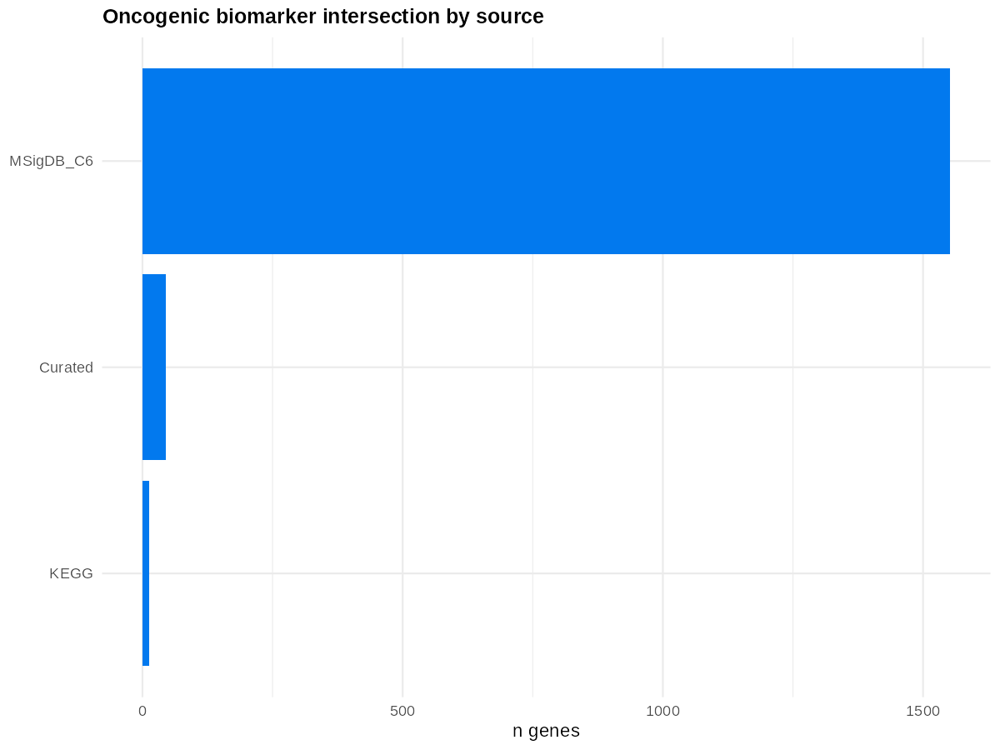
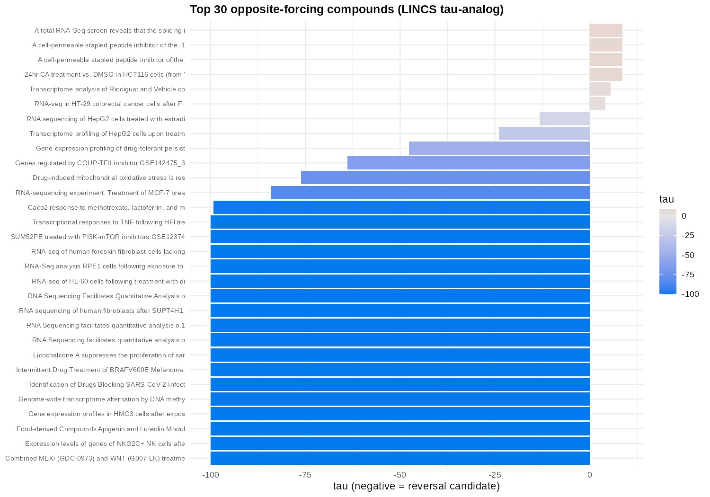
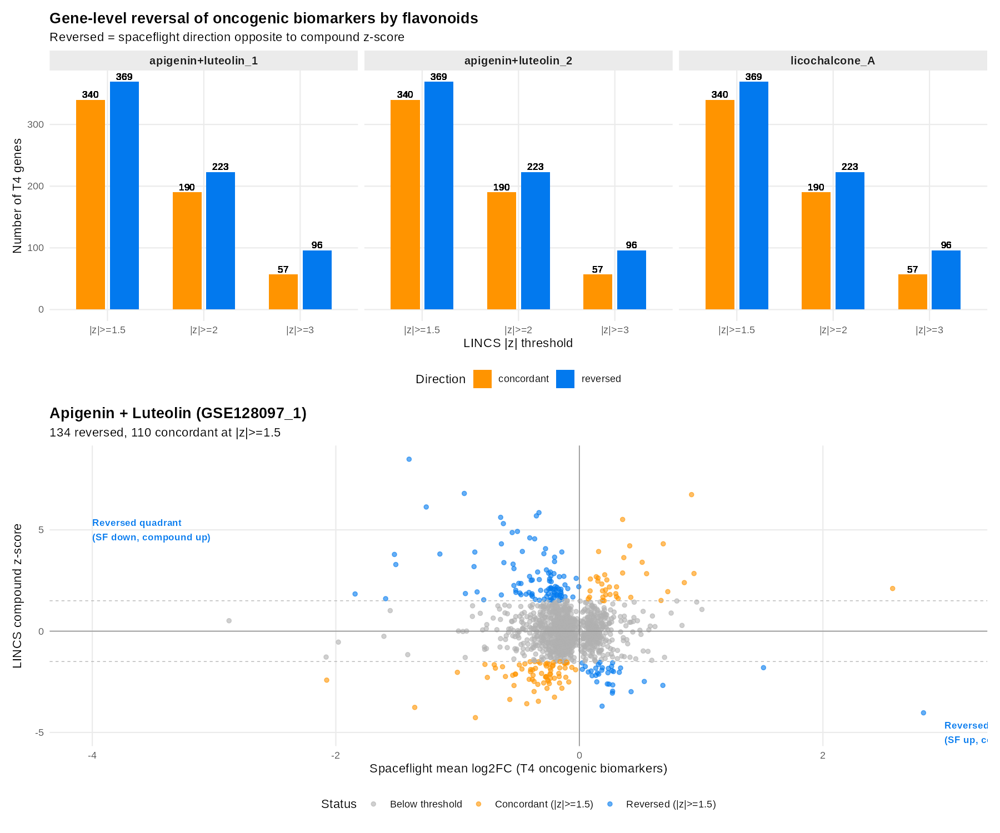

Spaceflight exposes tissues to microgravity and ionising radiation,
stressors independently linked to proliferation, DNA-damage, senescence and
immune-surveillance changes that overlap with early cancer biology. We built a
from-scratch R pipeline that (1) re-discovers a spaceflight oncogenic biomarker
signature across 23 NASA OSDR RNA-seq studies (11 human, 12 rodent) using strict
differential-expression thresholds and a random-effects meta-analysis
(metafor REML), (2) screens 420 LINCS L1000 drug perturbation
signatures for transcriptomic reversal via a tau-analog connectivity score, (3)
annotates top hits with drug-target-indication context (Broad Drug Repurposing Hub,
PrimeKG), (4) maps the signature to disease phenotypes (PrimeKG, Open Targets), and
(5) flags nutraceutical candidates. The meta-analysis scored 40,211 genes (3,668
significant), whose intersection with an 11,241-gene oncogene union yielded
1,610 oncogenic biomarker genes; validation against an independent Python
meta-signature showed Spearman ρ = 0.60. Twenty-one compounds showed
maximal reversal (τ = −100), led by the flavonoids apigenin, luteolin and
licochalcone A. At the gene level, 242 of 1,540 assessable biomarker genes (15.7%)
were directly reversed by at least one flavonoid signature — most strongly the
inflammatory / SASP chemokines CXCL8, MMP3, CSF2, CSF3 and CXCL3. Disease enrichment
implicated carcinoma, coronary artery disease and hereditary cancer syndromes. The
results nominate dietary flavonoids as candidate countermeasure agents for prospective
validation.
Spaceflight oncogenic biomarkers & their reversal by food-derived flavonoids
An "opposite-forcing" drug-discovery pipeline: re-derive a reproducible oncogenic biomarker signature across human and rodent spaceflight transcriptomes, then screen drug and nutraceutical perturbation signatures for the compounds that reverse it.
Headline: a 1,610-gene spaceflight oncogenic biomarker signature, re-derived across 23 OSDR studies, is most strongly reversed by the food-derived flavonoids apigenin, luteolin and licochalcone A, which counter-regulate inflammatory and senescence-associated chemokines.
Abstract
Highlights
Cross-species signature
1,610 oncogenic biomarker genes re-derived across 23 OSDR spaceflight studies (11 human, 12 rodent); ρ = 0.60 vs an independent meta-signature.
Opposite-forcing screen
420 LINCS L1000 drug signatures screened; 21 compounds at maximal reversal (τ = −100).
Nutraceutical hits
Led by food-derived flavonoids apigenin, luteolin, licochalcone A.
Gene-level reversal
242 / 1,540 biomarker genes (15.7%) directly reversed; inflammatory & SASP chemokines most strongly counter-regulated.
Selected figures



Data & code
- Manuscript: Markdown
· npj-styled LaTeX in
manuscript/latex/ - Pipeline (R):
scripts/(01 OSD query → 07 gene-level reversal) with reusable modules inR/and a one-command driverrun_all.R - Result tables:
tables/(T3 meta-signature, T4 oncogene intersection, T6/T7 reversal scores, T11–T13 enrichment & reversal) - Figures:
figures/(F1–F12) - Supporting JAXA6 data:
data/andfigures/(iDEP human-cell RNA-seq)
Independent research. Not affiliated with or endorsed by NASA or JAXA. Reference data (NASA OSDR, LINCS L1000, JAXA) remain subject to their own terms; cite the original accessions.